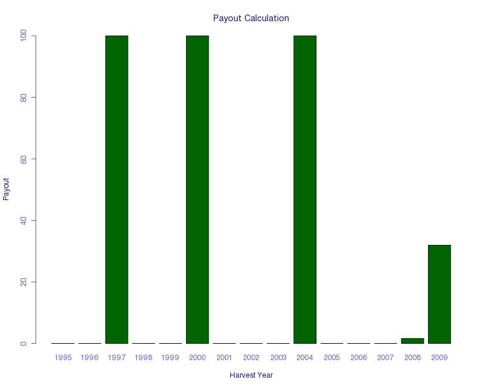

1. WIIET Exercise 1 Answer Key: Updating an Index Using Farmer Information
1.1. Task 1: Bringing a pre-existing index to a nearby community
- What years would have paid out? 1995, 1997, 2000, 2004, 2008. See table and graph below
- How many payouts would there have been? 5
- Are there any years with full payouts? If Yes, how many? No
1.2. Task 2: Adjusting the drought index based on farmer input
- How many payouts would this community have experienced in the last 15 years, if this new index had been used? Payouts in nearly all years. See table and graph below.
- Is this a realistic index? Not really, as it would make the contract extremely expensive.
- What else can be adjusted to create a better index that also addresses the farmers’ concerns? Exit and Trigger; this will be the main goal of Task 3
1.3. Task 3: Making a More Appropriate Index
(One suggested index. See example table and graph below)
- What trigger value have you chosen? 55
- What exit value have you chosen? 25
Payout years: 1997, 2000, 2004, 2008, 2009
Discussion:
To remind you of the farmers’ input:
Bad years from farmers: 2000, 2004, 2006, 2007, 2009
Very bad years: 2000, 2004, 2009
This index meets many of our design goals. It does not have too many large payments (which would increase the price), and it pays out in the very bad years mentioned by farmers. For most of the very bad years, there is a large payout, except for 2009, which would have had a relatively small payout.
Often, years very far in the past will not be on the farmers’ minds during design discussions. Thus, it is valuable to use the discussion and farmer input to focus further on evaluating the more recent payouts.
This index has a few limitations that will need to be discussed with farmers. It provides payouts in 1997 and 2008, which were not mentioned as drought years. From our rainfall data, 1997 is a very bad year. In discussions with experts, 1997 was a year with very low rainfall, so it is likely that it was actually a bad year, and we believe it would be a worthwhile payout.
It also does not provide a payout in 2006, which was mentioned by farmers as a bad year. This is a primary concern. We need to follow up in the next farmer discussion to see if this year was really that bad, and also if it would be acceptable to have a product that would not have paid out in 2006. Typically, the index cannot be made perfect. The farmer design team must feel comfortable about the amount of mismatch in the contract in order to proceed with implementation.
1.4. Task 4: Farmer discussion follow-up notes
- What parameter will you adjust to fulfill the farmers’ request? Exit
- Will this number be increased or decreased? Increase
- Will this result in a more expensive index? Why or why not? Yes, more expensive. A full payout occurs when the exit is above the rain by phase. Partial payouts occur when the rain by phase is between the trigger and the exit. When the exit is raised there is potential for more full payouts and larger partial payouts, making the index more expensive.
One example of the payouts for the index resulting from this process is presented below:

{kind=link}
{kind=link}
{kind=link}
{kind=link}
{kind=link}
{kind=link}
{kind=link}